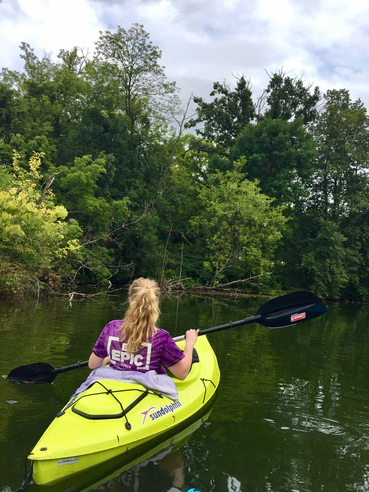

I am currently a third-year student at the University of Wisconsin-Madison, studying electrical engineering and computer science. I grew up in small Wisconsin town near Milwaukee. I enjoy hiking, sports, and learning new things.
Favorite Teams:
")
")
Toronto Maple Leafs
Green Bay Packers
Wisconsin Badgers

Fun Facts!
- I have 11 younger siblings (5 brothers and 6 sisters)
- I've played soccer since I was 4 years old
- I worked security at SuperBowl LII in Minneopolis, MN in February of 2018
- I started college as a pre-business/psychology double major
- I grew up in Oconomowoc, Wisconsin (prononced 'Oh-con-oh-mow-awe-k')